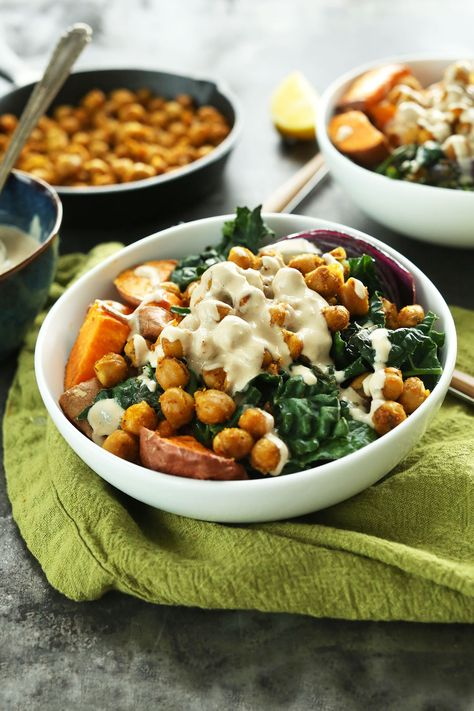

Sweet Potato Chickpea Buddha Bowl
Grain Bowls are a perfect lunch for Vegans. You can switch up the ingredients you use, so you never get bored, but chickpeas are my favorite addition as they are delicious and a great source of protein.
Ingredients:
- 1/2cup of brown rice (or any grain)
- 15.5-ounce can chicpeas
- 4 oz sweet peppers
- 1 clove garlic
- 1 zucchini
- 1/2 oz sweet piquante peppers
- 1/2 cup non-dairy yogurt
- 1/2 oz vegan feta (here is my favorite
- 1 tablespoon smoky spice blend (smoked paprika, sweet paprika, ground yellow mustard, garlic powder, and onion powder)
- 1 tablespoon white wine vinegar
Directions:
First, preheat the oven to 450 degrees Fahrenheit. Then, rinse the rice and add 1 cup of water to the rice in a medium saucepan. Bring the water to a boil, reduce the heat, cover, and simmer for about 20 minutes until the rice has absorbed the water. Turn off the heat, let the pot sit covered for ten minutes before removing the lid, and fluffing with a fork.
Next, drain and rinse the chickpeas. Cut off and discard the sweet peppers' stems; remove the cores, then cut them into quarters lengthwise. Quarter the zucchini lengthwise as well, then cut crosswise into 1-inch pieces.
Then, spread the chickpeas onto paper towels, adding a second layer of paper towels on top, and gently pat or roll the chickpeas to dry. Drizzle the chickpeas with 1 teaspoon of olive oil and season with salt and pepper; toss to coat. Arrange in an even layer on one side of a sheet pan. Place the sweet peppers and zucchini pieces in a bowl and drizzle with 1/2 teaspoon of olive oil and season with salt, pepper, and the spice blend to coat. Transfer to the same sheet pan and roast for 16 to 18 minutes, or until the vegetables are tender and chickpeas crispy. Enjoy!